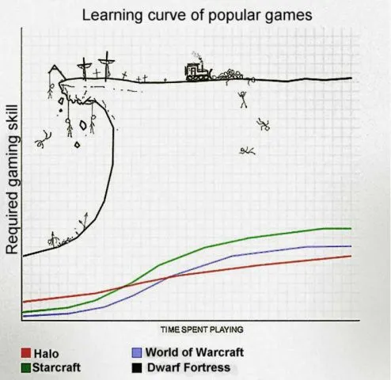

I’ve been using Redux for a few years. It’s cool! I can manage the state of my application in a single Store with many reducers. But… wait, what is really a store? A reducer? An action? Let’s decrypt it!
Note: I wrote this article after having prepared a talk on the same subject. This article is more or less this talk’s retranscription (with all I want to say on the subject). If you’re interested, I can present the talk at some conference, so you can contact me at florian[at]kbdev[dot]io. Thanks a lot and have a good read!
Yeah, Redux! Honestly, I know there’s so much better ways to store state and all the things related to Redux. But I began to write React applications with it, and it was cool. Except I remember when I began to use it, it looks like learning to play Dwarf Fortress.
 Replace Dwarf Fortress with Redux Each time I wrote an action, I was sure some strange bugs would happen. What did this dispatch function do? How could I connect it to my React app? And, clearly the best: how could I write this f*cking async function?
After writing a Typescript typed version of Redux, I saw the light: Redux is incredibly simple. I can now (and, after reading this article, you will be able to) write a Redux in 5 minutes. With async and history handling. Sounds cool huh?
Let’s do some magic!
What is Redux?
A predictable state container for JavaScript apps.
Me. I'm a penguin. Hmmm … let’s try something better.
Imagine Redux like a big object which contains all global variables of your application. You cannot mutate directly this object. You need to call some functions to change it.
A simple example is saying Redux is your bank. You have an amount on your account and you can only change this amount by doing some operations. An operation is an action (or mutation) and your account is the Store’s data.
Action — I do an operation
Each mutation is done by passing an action.
An action is just a simple Javascript object with a unique key (to recognize which action we are doing) and the data of the action. This little object is given to a function dispatch() which sends it.
In the bank example, an action is something like this:
{
"type": "ADD_AMOUNT_ON_ACCOUNT",
"value": 23.96
}To avoid doing some errors when typing the unique key of the action, we can create an Action Creator. This is just a function which creates the object. Something like this:
const ADD_AMOUNT_ON_ACCOUNT = "ADD_AMOUNT_ON_ACCOUNT";
const REMOVE_AMOUNT_FROM_ACCOUNT = "REMOVE_AMOUNT_FROM_ACCOUNT";
function addAmountOnAccount(amount) {
return {
amount,
type: ADD_AMOUNT_ON_ACCOUNT
};
}
function removeAmountOnAccount(amount) {
return {
amount,
type: REMOVE_AMOUNT_ON_ACCOUNT
};
}
module.exports = {
ADD_AMOUNT_ON_ACCOUNT,
REMOVE_AMOUNT_FROM_ACCOUNT,
addAmountOnAccount,
removeAmountOnAccount
};Reducer — I treat the operation
Each variable available in the application is a reducer.
A Reducer is a function which returns the data for the current variable. It can be, for example, the state for the option “dark mode enabled” of your application. Or, in the bank example, the amount of money on all accounts.
const {
ADD_AMOUNT_ON_ACCOUNT,
REMOVE_AMOUNT_FROM_ACCOUNT
} = require("./accountActions");
module.exports = function accountAmount(state = { value: 0 }, action) {
switch (action.type) {
case ADD_AMOUNT_ON_ACCOUNT:
return { value: state.value + action.value };
case REMOVE_AMOUNT_FROM_ACCOUNT:
return { value: state.value - action.value };
default:
return state;
}
};Each time you give a new action to a reducer, it will check if this type of action must be handled. If that is the case, the reducer will create a new output value which corresponds to the reducer new state.
These functions must be pure and without any side effect. These two conditions just tell:
- a function must return the same result with the same arguments. (ex: a function which computes an addition is pure.)
- a function must not do any modification to the environment. (ex: a function which mutates an argument has a side-effect.)
These conditions allow Redux to be completely predictable. If your functions always do the same things with the same arguments, you will always get the same result by computing the same sequence of actions at any time. So you can easily test your code or create reproducible error logs.
The default state is here because (spoiler alert) the Store dispatches any action to all reducers. So we need to return the current state if the treated action hasn’t any incidence on the current reducer.
Store — Where all happens
Until here, we didn’t have code any Redux file. Because Redux is just the Store. This is where all the magic happens.
A Store is an object which propagates actions in reducers and keeps the current state in memory. In Redux, you can also listen to any change in the Store with the subscribe() method.
For the bank, the Store is the system which handles operations. The Store calls the system, and the system updates accounts.
To create the Store, we will use a simple ES6 Class with 2 attributes: state to keep the last state of the application and reducers to keep the reducers of the application.
class Store {
constructor(reducers) {
this._reducers = reducers;
this._state = {};
}
}The next step is one of the biggest steps we will do: creating the dispatch function. This is the famous function which does all the job in Redux.
The algorithm is :
- 1: Get all reducers
- 2: Create an object
NextState. - 3: For each reducer
Rwith its nameName, call the reducer R and store its result inNextState[Name]. - 4: Replace the previous
this.statebyNextState.
Yeah. That’s all. Nothing more.
Writing this code is not really complicated. I use the Array.reduce() method to call each reducer and compute a new state.
class Store {
constructor(reducers) {
this._reducers = reducers;
this._state = {};
// Don't forget that because dispatch() can lose its context
this.dispatch = this.dispatch.bind(this);
// We also add a init call to create the default state of Store
this.dispatch({type: '__INIT__'});
}
dispatch(action) {
// Get all reducers names
const reducersNames = Object.keys(this._reducers);
// Compute the new current state of the application
// by propagating the action
const nextState = reducersNames.reduce((newState, name) => {
// Just call each reducer with the current state of the reducer
// and the action
newState[name] = this._reducers[name](this._state[name], action);
return newState;
}, {});
// Keep the new state in memory
this._state = nextState;
}
getState() {
return this._state;
}
}I also added the getState() method which only returns the current state of the Store. To be Redux-compliant, we also need two things: subscribers and middlewares. We will not speak about middlewares: they are not extremely difficult to implement, but you don’t probably need them because you can add everything you need directly in your own version of Redux.
For friends of the Gang of Four, subscribers are a simple Observer pattern.
// Long version for the Observer pattern. Go to the next comment if you don’t need it.
An Observer is one of the simplest patterns described in the Design Patterns book from Gamma, Helm, Johnson, and Vlissides (the Gang of Four), an OOP design patterns book. This pattern is also known as Listener or Subscriber.
You need at least two objects to use this pattern:
- the Subject is the object we are waiting for information. When this object will do an update, it will send its new state to all Observers.
- an Observer is an object waiting for an update of the Subject. It will do something when the Subject tells him it has been updated.
This pattern allows to add and to remove any new Observer to the Subject at any time, so we have a low dependency between our objects.
In our case, the Subject is the Store.
To implement this pattern in Javascript, we only need to add a subscribe() method which will return the unsubscribe() method when we add a Subscriber and keep the new subscriber in an array of subscribers. And we must add the call to the subscribers when a new state is created.
// End of long version for the Observer pattern.
In term of code for subscribers implementation, we got this.
class Store {
constructor(reducers) {
// ...
// New code
this.subscribers = [];
}
dispatch(action) {
// ...
// New code : call each observer with the new state
this.subscribers.forEach((subscriber) => {
subscriber(this._state);
});
}
// New code
subscribe(subscriber) {
this.subscribers.push(subscriber);
// Return the unsubscribe function
return () => {
this.subscribers.splice(this.subscribers.indexOf(subscriber), 1);
};
}
}Not a lot of code. That’s cool.
And… you have your version of Redux.
You. Eheh. Yes. Dan Abramov got 46000 stars on Github with this. Our prophet has one of the best number of lines/stars ratio of Github. (If you’re reading this and you’re Dan, please, I want a dedicated portrait of you on my desk. We can marry us too, but a portrait can be a good beginning.)
Time to go to Redux++
Ok, we have the basis. But I’m sure you want to have at least one of the most complex feature to deal with Redux: asynchronous function handling.
My brain. Your brain. Everyone’s brain reading that. It’s ok. We will do this together. Without banned words like thunk and saga and any-way-to-do-async-without-doing-anything-but-I-never-understood-this.
Our async handling system will use functions. We will consider that action can be a function instead of an object. This function will take the dispatch() method from the Store as parameter. So we can create an action that will call himself the dispatch() method when we need to dispatch a new action.
const ADD_AMOUNT_ON_ACCOUNT = "ADD_AMOUNT_ON_ACCOUNT";
const REMOVE_AMOUNT_FROM_ACCOUNT = "REMOVE_AMOUNT_FROM_ACCOUNT";
// For the fun, it simulates the same process
// than Paypal when you want to verify your account
function verifyAccount() {
return (dispatch) => {
dispatch(removeAmountOnAccount(0.30));
// Simulate asynchronous treatment
setTimeout(() => {
dispatch(addAmountOnAccount(0.30));
}, 1000);
}
}In this case, we are just considering that any action which is a function is an Async Action. So we just have to check if the action in dispatch() is a function and call it in this case. Else, only do what we did before.
class Store {
// Just renamed the old dispatch to _dispatch
_dispatch(action) {
const reducersNames = Object.keys(this._reducers);
const nextState = reducersNames.reduce((newState, name) => {
newState[name] = this._reducers[name](this._state[name], action);
return newState;
}, {});
this._state = nextState;
this.subscribers.forEach((subscriber) => {
subscriber(this._state);
});
}
// New code
dispatch(action) {
if (typeof action === 'function') {
return action(this.dispatch);
}
this._dispatch(action);
}
}5 new lines of codes. You can write only one line with a fat-arrow and a ternary operator.
And now you are handling async functions.
You. Me. Everyone.
The best thing is you can write every system you want based on Redux. If you are totally Redux-compliant**, you can replace your current redux with your own new system in react-redux. That’s what we did on an internal project at KBDev.
Redux is minimalist and magic. It’s the perfection.
I’m not sure for this statement.
You. Hmm yes, I wrote this article on Redux and I’m saying that this library is not a solution for all problems.
We must think about a few things.
First, if you are using React, there’s a lot of API features which will be soon added. Just take a look at the Context API, the Suspense API or the amazing Hooks API. All of these APIs are solutions for problems where Redux was used.
Secondly, in an article named You Might Not Need Redux from our lord Dan himself, he wrote we perhaps need Redux because we don’t have understood how to code with React.
However, if you’re just learning React, don’t make Redux your first choice.
Instead learn to think in React.
Come back to Redux if you find a real need for it, or if you want to try something new. But approach it with caution, just like you do with any highly opinionated tool.
If you feel pressured to do things “the Redux way”, it may be a sign that you or your teammates are taking it too seriously. It’s just one of the tools in your toolbox, an experiment gone wild.
{% include image.html url=“/assets/images/danAbramov.jpeg” description=“The Lord and Saviour of the Earth.” %}
Thirdly, I wrote this article to prove you that you don’t always need to do an npm install each time. A lot of libraries are just some concepts you can recreate and complete with your needs.
Lastly, Redux must be appreciated like a design pattern instead of a library. We need to remember how we can create some simple state management software with reducers. You can reuse this pattern to make internal reducers for components or anything else. For example, I’ve done an HTTP fetch hook based on an internal reducer. And it works like a charm.
Here’s an example I wrote;
We need to remember that we can invent things. I’m sure if you have read this article you are interested in how software pieces work. On how can we create complex systems with just some lines of code. That’s what we have to do: always learn new and efficient ways to do a better job. And that’s the magic of our job: we are paid to hit our f***ing keyboard to display rainbows and unicorns on all screens of the universe. And that’s cool! So let’s do some great unicorns instead of evil and ugly dead hell pony!
There’s a Github repository with all the code of this article and my own Typescript special version of Redux called Zebulon. All are available here: Redux-Recoded repository. You can use this code in your projects. And if you have some questions, just ask them in comments, I will try to answer them.
Thanks a lot for reading! :)
And thanks for Jean Batista and Jérémy Turon for correcting my bad English.